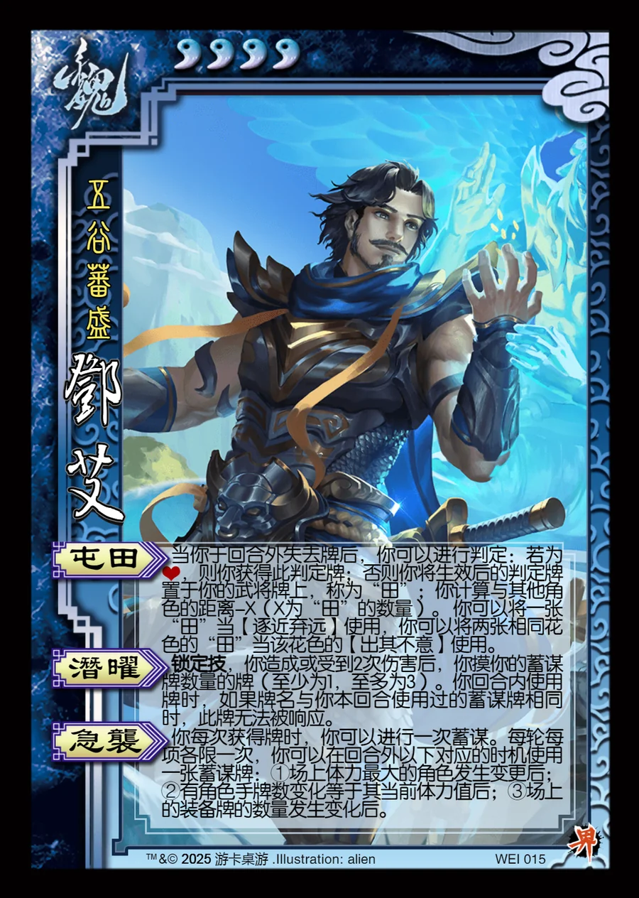

点击卡面查看大图
魏
界邓艾
♥4五谷蕃盛
屯田
当你于回合外失去牌后，你可以进行判定：若为♥，则你获得此判定牌；否则你将生效后的判定牌置于你的武将牌上，称为“田”；你计算与其他角色的距离-X（X为“田”的数量）。 你可以将一张“田”当【逐近弃远】使用，你可以将两张相同花色的“田”当该花色的【出其不意】使用。
潜曜锁定技
锁定技，你造成或受到2次伤害后，你摸你的蓄谋牌数量的牌（至少为1，至多为3）。你回合内使用牌时，如果牌名与你本回合使用过的蓄谋牌相同时，此牌无法被响应。
急袭
你每次获得牌时，你可以进行一次蓄谋。每轮每项各限一次，你可以在回合外以下对应的时机使用一张蓄谋牌：①场上体力最大的角色发生变更后； ②有角色手牌数变化等于其当前体力值后；③场上的装备牌的数量发生变化后。